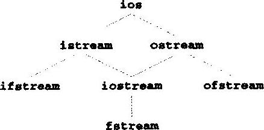

图14．2 C++把文件看成n个字节
要在C++中进行文件处理，就要包括头文件<iostream.h>和<fstream.h>。<fstream.h>头文件包括流类ifstream(从文件输入)、ofstream(向文件输出)和fstream(从文件输入，输出)的定义。生成这些流类的对象即可打开文件。这些流类分别从istream、ostream和iostream类派生(即继承它们的功能)。这样，第11章“C++输入，输出流”中介绍的成员函数、运算符和流操纵算子也可用于文件流。I／O类的继承关系见图14.3。
因为C++把文件看着是无结构的字节流，所以记录等等的说法在C++文件中是不存在的。为此，程序员必须提供满足特定应用程序要求的文件结构。下例说明了程序员是怎样给文件强加一个记录结构。先列出程序，然后再分析细节。
图14.4中的程序建立了一个简单的顺序访问文件，该文件可用在应收账目管理系统中跟踪公司借贷客户的欠款数目。程序能够获取每一个客户的账号、客户名和对客户的结算额。一个客户的数据就构成了该客户的记录。账号在应用程序中用作记录关键字，文件按账号顺序建立和维护。范例程序假定用户是按账号顺序键人记录的(为了让用户按任意顺序键入记录，完善的应收账目管理系统应该具备排序能力)。然后把键入的记录保存并写入文件。
// Fig. 14.4; fig14_04.cpp
// Create a sequential file
#include <iostream.h>
#include <fstream.h>
#include <stdlib.h>
int main()
{
// ofstream constructor opens file
ofstream outClientFile( "clients.dat", ios::out );
if ( !outClientFile ) { // overloaded ! operator
cerr << "File could not be opened" << endl;
exit( 1 ); // prototype in stdlib.h
}
cout << "Enter the account, name, and balance.\n"
<< "Enter end-of-file to end input.\n? ";
int account;
char name[ 30 ];
float balance;
while (cin >> account >> name >> balance ) {
outClientFile << account << ' ' << name
<< ' ' << balance << '\n';
cout << "? ";
}
return 0; // ofstream destructor closes file
}
输出结果： Enter the account, name, and balance. Enter end-of-file to end input. ? 100 Jones 24.98 ? 200 Doe 345.67 ? 300 White 0 ? 400 Stone -42.16 ? 500 Rich 224.62 ? ^z
图 14．4 建立顺序文件
现在我们来研究这个程序。前面曾介绍过，文件通过建立ifstream、ofstream或fstream流类的对象而打开。图14．4中，要打开文件以便输出，因此生成ofstream对象。向对象构造函数传入两个参数——文件名和文件打开方式。对于ostream对象，文件打开方式可以是ios::out(将数据输出到文件)或ios::app(将数据添加到文件末尾，而不修改文件中现有的数据)。现有文件用ios::out打开时会截尾，即文件中的所有数据均删除。如果指定文件还不存在，则用该文件名生成这个文件。下列声明(第10行)：
ofstream outClientFile(“clients.dat”．ios::out);
生成ofstream对象outClientfile，与打开输出的文件clients.dat相关联。参数"clients.dat"和ios::out传入ofstream构造函数，该函数打开文件，从而建立与文件的通信线路。默认情况下，打开ofstream对象以便输出，因此下列语句：
ofstream outClientFile (”clients.dat”);
也可以打开clients.dat进行输出。图14.5列出了文件打开方式。打开一个用户想保留数据的现有文件进行输出(ios::out方式)。这种操作会删除文件的内容而不会给予警告。
用错误的ofstream对象指明一个文件。
也可以生成ofstream对象而不打开特定文件，可以在后面再将文件与对象相连接。例如，下列声明：
ofstream outClientFile；
生成以ofstram对象outClientFile。ofstream成员函数open打开文件并将其与现有ofstream对象相连接，如下所示：
outClientFile open(”clients.dat”，ios::out)；
------------------------------------------------------------------------------------------
文件打开方式 说明
------------------------------------------------------------------------------------------
ios::app 将所有输出写入文件末尾
ios::ate 打开文件以便输出，井移到文件末尾(通常用于添加数据)数据可以写入
文件中的任何地方
ios::in 打开文件以便输入
ios::out 打开文件以便输出
ios::trunc 删除文件现有内容(是ios::out的默认操作)
ios::nocreate 如果文件不存在，则文件打开失败
ios::noreplace 如果文件存在，则文件打开失败
------------------------------------------------------------------------------------------
图14. 5 文件打开方式
在引用文件之前忘记打开该文件。
生成ofstream对象并准备打开时，程序测试打开操作是否成功。下列if结构中的操作(第12行到第15行)：
if ( !outClientFile ) {
cerr << "File could not be opened" << endl;
exit(1);
}
用重载的ios运算符成员函数operator!确定打开操作是否成功。如果open操作的流将failbit或badbit设置，则这个条件返回非0值(true)。可能的错误是试图打开读取不存在的文件、试图打开读取没有权限的文件或试图打开文件以便写人而磁盘空间不足。
如果条件表示打开操作不成功．则输出错误消息“File could not be opened"，并调用函数exit结束程序，exit的参数返回到调用该程序的环境中，参数0表示程序正常终止．任何其他值表示程序因某个错误而终止。exit返回的值让调用环境(通常是操作系统)对错误做出相应的响应。
另一个重载的ios运算符成员函数operator void*将流变成指针，使其测试为0(空指针)或非0(任何其他指针值)。如果failbit或badbit(见第11章)对流进行设置，则返回0(false)。下列while首部的条件自动调用operator void*成员函数：
while (cin >> account >> name >> balance )
只要cin的failbit和badbit都没有设置，则条件保持true。输入文件结束符设置cin的failbit。operator void*函数可以测试输入对象的文件结束符，而不必对输入对象显式调用eof成员函数。
如果文件打开成功，则程序开始处理数据。下列语句(第17行和第18行)提示用户对每个记录输入不同域，或在数据输入完成时输入文件结束符：
cout << "Enter the account, name, and balance. " << "Enter EOF to and input. ";
图14. 6列出了不同计算机系统中文件结束符的键盘组合。
---------------------------------------------------
计算机系统 组合键
---------------------------------------------------
UNIX系统 d
IBM PC及其兼容机 z
Macintosh d
VAX(VMS) z
---------------------------------------------------
图14．6各种流行的计算机系统中的文件结束组合键
下列语句(第24行)：
while (cin >> account >> name >> balance )
输入每组数据并确定是否输人了文件结束符。输入文件结束符或不合法数据时，cin的流读取运算符 >>返回0(通常这个流读取运算符>>返回cin)，while结构终止。用户输入文件结束符告诉程序没有更多要处理的数据。当用户输入文件结束符组合键时，设置文件结束符。只要没有输入文件结束符，while结构就一直循环。
第25行和第26行：
outClientFile << account << ' ' << name << ' ' << balance << ' ';
用流插人运算符<<和程序开头与文件相关联的outClientFile对象将一组数据写入文件”clients.dat"。
可以用读取文件的程序取得这些数据(见14．5节)。注意图14.4中生成的文件是文本文件，可以用任何文本编辑器读取。
输人文件结束符后，main终止，使得outClientFile对象删除，从而调用其析构函数，关闭文件
clients.dat。程序员可以用成员函数close显式关闭ofstream对象，如下所示：
outClientFile.close();
程序不再引用的文件应立即显式关闭．这样可以减少程序继续执行时占用的资源。这种方法还可以提高程序的清晰性。
在图14．4的执行范例中，用户输人了五条记录．然后键入了表示数据输入结束的文件结束符(IBM PC兼容机的屏幕上显示^z)。输出结果的对话窗口中没有说明这些记录究竟是怎样在文件中组织。为了验证文件的建立是成功的，下一节介绍了读取和打印该文件的程序。